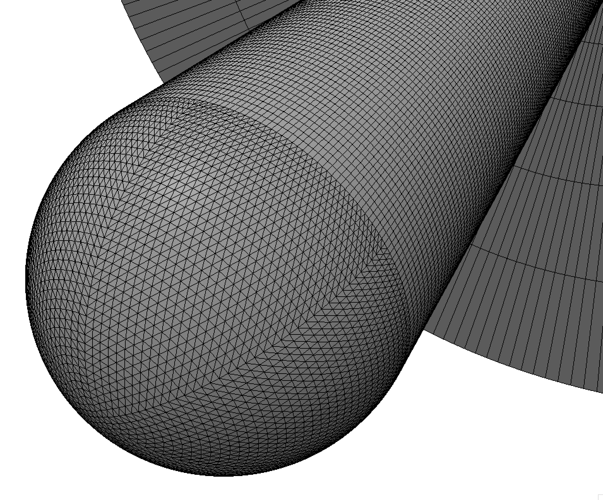
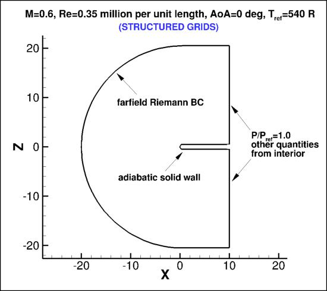
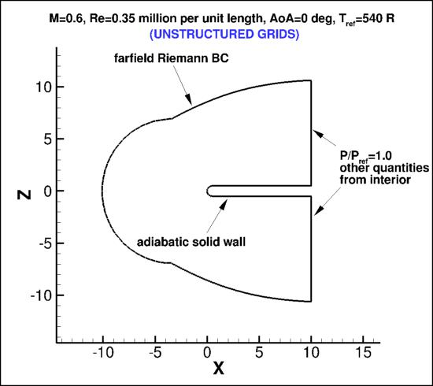
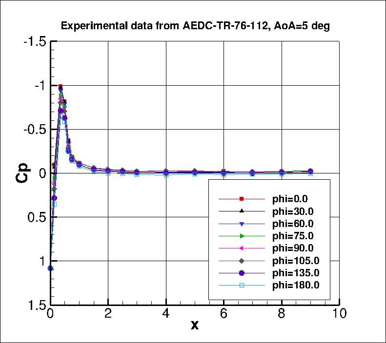
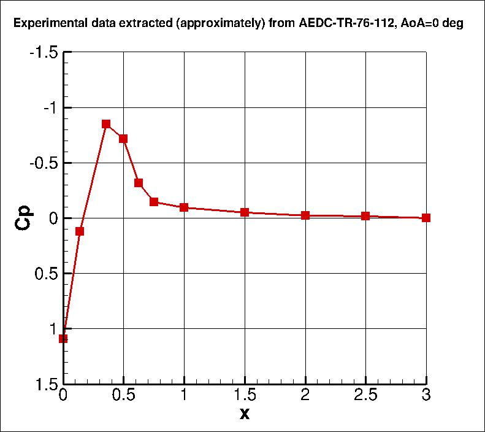

Public Access (formerly Langley Research Center)Turbulence Modeling Resource |
Return to: Turbulence Modeling Resource Home Page
TURBULENCE MODEL NUMERICAL ANALYSIS
3D Hemisphere Cylinder Validation Case
The purpose here is to provide a test case for a turbulent flow over a smooth body of revolution in 3D.
This case is designed primarily for numerical
analysis of turbulence model simulations; e.g., convergence properties, effect of order of accuracy, etc.
There is a more recent update of this case (with new grids) at
3D Hemisphere Cylinder Validation Case (NEW).

The geometry is taken from the
experimental model studied in AEDC-TR-76-112, 1976, "An Investigation of Separated Flow About a
Hemisphere Cylinder at 0- to 19-Deg Incidence in the Mach Number Range of 0.6 to 1.5" authored by Tsieh, T.,
https://apps.dtic.mil/sti/pdfs/ADA073451.pdf).
The following plots show the layout of
the hemisphere cylinder grids, along with recommended boundary conditions.
Unlike most other test cases on the Turbulence Modeling Resource website,
for this particular test case the structured and unstructured grids
were created independently of one another. Thus they are not related, other than the fact that the body
shape and exit plane are the same.
Note that for this test case
the outer boundary extents are different: for the structured grid, it is located
approximately 20 unit lengths from the body; whereas for the unstructured grid, it is located
approximately 10 unit lengths from the body.
In the experiment, the Re/ft was 4.2 million, the radius of the hemisphere was 0.5 inches, and the body length was 10 inches.
Thus, the Re/(unit grid length) = 0.35 million with a hemisphere radius of 0.5 in the computational grid (i.e., the
unit length in the grid is 1 inch). The reference solutions to be provided are computed at M=0.6, angle of attack of 0 degrees.
Reference temperature is taken to be 540 degrees Rankine.
At the "farfield" boundary, a Riemann invariant BC is employed, with the
external boundary assumed to be freestream conditions based on input Mach number.
For computing forces, the reference area of this case is taken to be 10 in2 (for the full 360 degrees), or
5 in2 (for a half-plane computation of 180 degrees).


Although the reference CFD solutions to be provided are for angle of attack of zero, in the first figure below the experimental surface pressure
coefficients from AEDC-TR-76-112 are plotted as functions of x for the turbulent flow at angle of attack of 5 degrees.
Results are shown for various positions around the azimuth.
In the experiment, phi=0 deg corresponds with the "top" or leeside of the body (which faces away from the wind
when the body is at angle of attack), and phi=180 deg corresponds with the "bottom" of the body
(facing the wind).
Approximate results extracted from a figure in the reference at angle of attack of 0 degrees are shown in the second figure below.


The experimental data are provided here:
hc_exp_alpha5_mach0p6.dat and
hc_exp_alpha0_mach0p6.dat.
What to Expect (AoA=0):
(Other turbulence model results may be added in the future.)
Return to: Turbulence Modeling Resource Home Page
RESULTS
LINK TO EQUATIONS
MRR Level
SA-neg
SA-neg eqns
4
Page Curators: Christopher Rumsey,
Ethan Vogel,
Clark Pederson
Last Updated: 11/10/2021